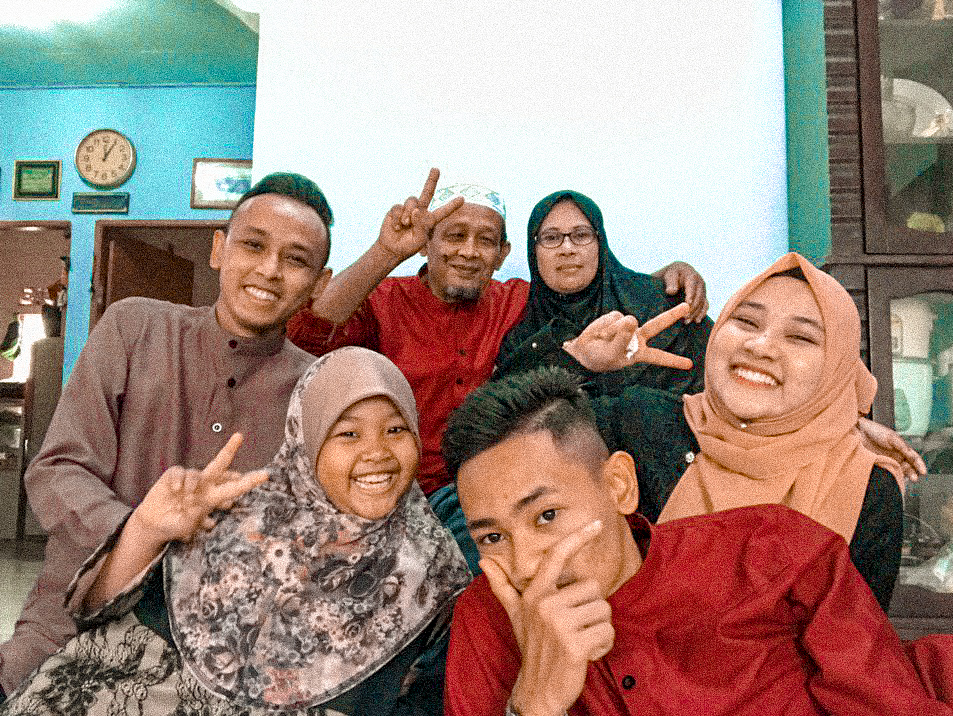
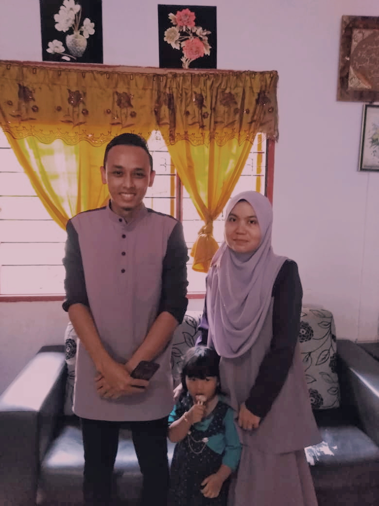
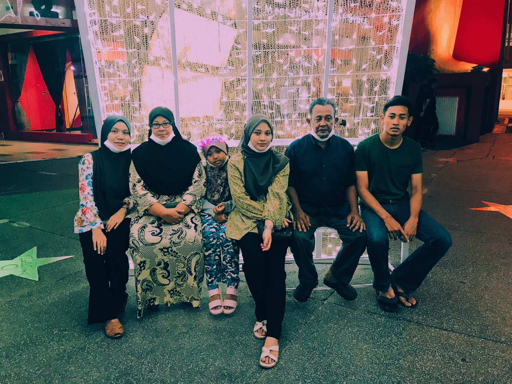

Families are the compass that guides us. They are the inspiration to reach great heights, and our comfort when we occasionally falter. My father's name is Azman Bin Che Din. He is 57 years old. My father is a guard at my past primary school in my village. He used to be a labor and village work. He such a strong man that I ever seen, he did everything to make my family happy. My mother's name is Fauziah Binti Ismail. She is 48 years old. My mother is a full-time housewife since he got married to my father. Both my parents have been dedicated their lives in raising the 4 of my siblings and ensure that we become successful individuals in this world and hereafter. I thank God to have such great parents.
 
The eldest among my siblings is my brother, Muhammad Faizzudin. He is 27 years old and already married. He has been blessed with a beautiful and kind wife. He graduated from Politeknik Merlimau Melaka in Electronic Architecture. He now works at Selangor and involved with car's battery. The second one is me. Then, my younger brother, Muhammad Fahmi. He is 19 years old. He is study at Industrial Training Institute. He also learn about Electronic Architecture. The last one is my sister, Nur Airris. She is 9 years old and she study at my last school, Sekolah Kebangsaan Pak Roman.